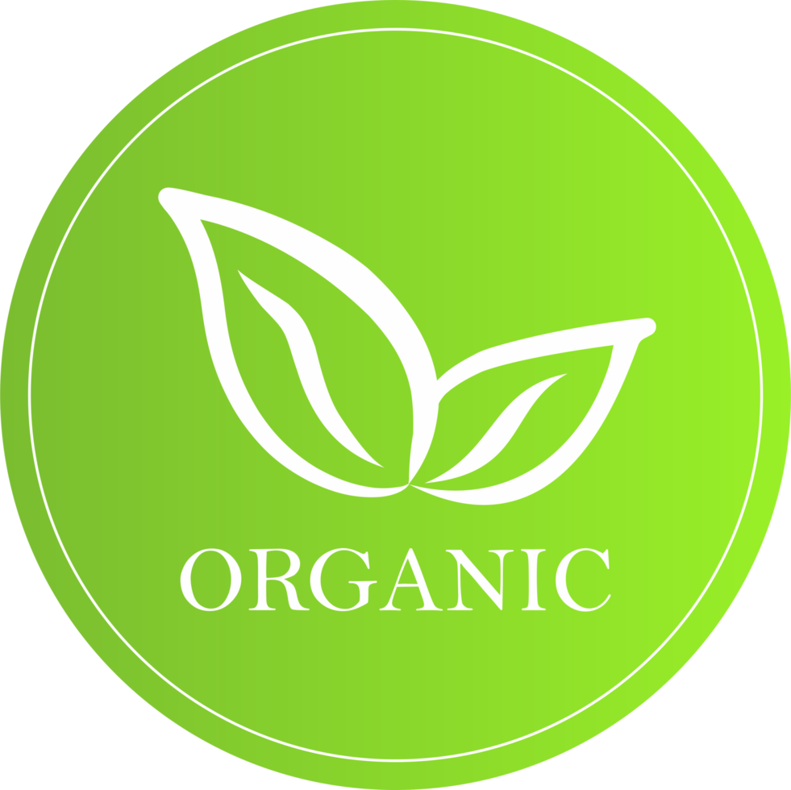

Why Choose Us
Healthy Food With Natural Freshness
We provide premium quality organic produce sourced directly from trusted farms for a healthier lifestyle.

100% Organic
Naturally grown products without harmful chemicals.
Farm Fresh
Freshly harvested fruits and vegetables every day.
Fast Delivery
Quick and reliable delivery to your doorstep.
Healthy Lifestyle
Nutritious food choices for you and your family.